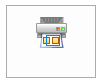

Print an area
You can print an inspection view of the model or show the contents of a title block on a draft sheet by selecting the Print Area command and defining two diagonal points.
-
In the active window, display the model or the draft sheet or the Draw In View window that contains the design that you want to print.
-
On the File menu, click Paper Print.
-
From the Printer list, select the name of the printer to print the document.
-
(Optional) Select the number of copies and other print options that you want use, based on the type of document you are printing.
For more information, see Paper Print settings for draft documents or Paper Print settings for model documents.
-
Select the Print Area command.

-
Specify the design area to print:
-
Click at one corner of the design that you want to print. If you want to print a drawing border, click outside the drawing border.
-
Move the mouse diagonally to the opposite corner of the design so that everything that you want to print is included in the fence, and then click again.
-
-
In the Print Area dialog box, the area that you specified is represented by the blue rectangle. The paper border is represented by the red rectangle.
-
Review the settings and make changes as needed.
-
Click OK to print the drawing.
-
How do I
Print a documentPrint to a file
Print at a 1:1 scale
Print a composite drawing
Print to Adobe PDF
Change PDF printer properties
Learn more
Printing documentsUsing the Paper Print page
Printing composite drawings
Look up more details
Paper Print settings for draft documentsPaper Print settings for model documents
(Print) Options dialog box
Print Area dialog box
Options-Multiple Sheets per Page
Options - Single Sheet per Page
Print Drawings - Select Sheets dialog box
Print Drawings - Select Documents dialog box
Preview dialog box